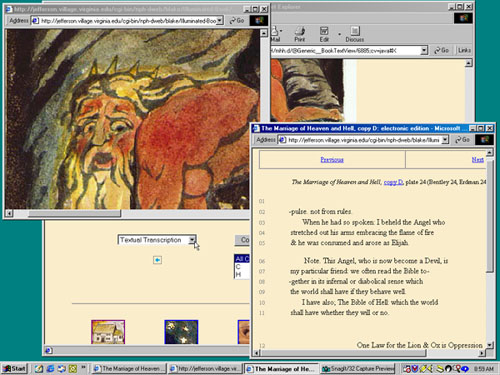
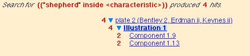
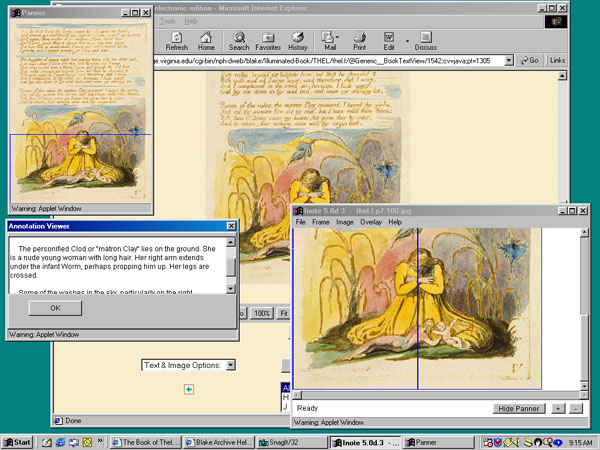
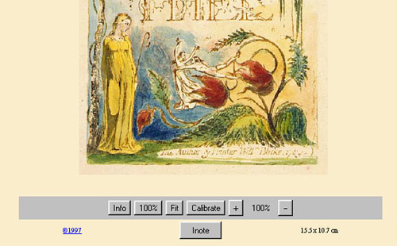

Please note: if this help document does not answer your
question or address the problem you are having with the Blake Archive,
please let us know, and
we'll try to improve our documentation. For the latest news about the
progress of the Archive, see the Archive
Update.
To exit Help at any time, simply
reselect your other browser window.
Graphical Help Screens (click icon for full-sized image):
The Archive and the Web
There are two different kinds of HTML pages in the Blake Archive:
static pages that are written in HTML and served when a browser requests the page, and a second
kind created by generating an HTML page from an eXtensible Markup Language (XML) file
and a set of instructions for creating the HTML page.
You encounter the first, ordinary kind in our "top-level" pages
(such as the Archive home page, project updates, and this help document). But
when you view one of Blake's works, for example, one of Blake's illuminated books, you are viewing
HTML pages that are being created from the XML source documents and a set of instructions
for creating those page.
The instructions for creating the page in which you view one of Blake's works are
managed by an XML publishing system called eXist, which combines the XML file with
instructions written in XML query language (xQuery) and instructions written in
eXtensible Stylesheet Language: Transformations (XSLT) in order to "publish"
the file for viewing in the browser. Erdman's The Complete Poetry and Prose
of William Blake is also published through eXist. The bibliographies, collection
lists, and articles are also XML pages, but they are published using XML and XSLT
without without xQuery or the eXist database.
For Blake's works and Erdman, eXist also handles the Archive's indexing and
search functions.
These help instructions apply to the published works portions of the Archive, not the
static HTML pages or the bibliographies, collection lists, or articles.
Some users may be interested to know that all XML documents
on the Blake Archive conform to a set of requirements that are
codified in a Document Type Definition (DTD). The two DTDs for Blake Archive
are known as the Blake Object Description (BOD) and the Blake Archive Description (BAD).
Other documents (Erdman, bibliographies and collection lists, articles) conform
to a simplified Text Encoding Initiative DTD (TEI-Lite), but static HTML pages
do not conform to a DTD.
Table of Contents, or to exit Help, simply reselect your other
browser window.
Navigation and Basic
Features
Let us assume that you have arrived at the William Blake Archive
and selected "Works in the Archive" from the main table of contents page.
Up to this point, all navigation has taken place in ordinary Web pages;
upon selecting "Works in the Archive," you arrive at the DynaWeb portion of
the site. From here you may proceed to the index of all of the Archive's
illuminated books or non-illuminated materials (also known as a
"Collection" index), and then from there to individual indexes for each of
the various works in illuminated printing or non-illuminated media (e.g.,
engravings, water color drawings and paintings, etc.) in the Archive (also
known as the "Work" indexes).
The Work indexes provide links to individual copies of the work in the
Archive, as well as a brief prose introduction and a list of all extant
copies.
Note that there are five icons displayed across the bottom of the Work
index (and that these same five icons are available on many of the
Archive's DynaWeb pages). The icons are:
 | Home: Returns you to the Archive's main table of contents
page. |
 | Navigator: Invokes the Archive's Navigator feature
(described below). |
 | Search: Brings you to the Archive's main search page, where
you can initiate searches for either text or images (described below). |
 | Java/Non-Java: Toggles back and before between the Archive's
Java and non-Java modes (described below). |
 | Help: Displays this help document. |
In addition, two other links are offered from the Work index: the link
at top left returns you to the collection index, while the "Bibliography
for the Work" link, at top right, connects you to the Archive's Specific
Bibliographies for the work at hand.
Table of Contents,
or to exit Help, simply reselect your other browser
window.
Collection Index
At the top left of the table of contents page for the copy (such as
The Book of Thel, copy F) is a link to the Collection index.
("Collection" is a special DynaWeb term, not to be confused with, say,
art "collection" in the more usual sense.) For The Book of Thel,
copy F the Collection index is identified as the "Illuminated Book
Index." The Illuminated Book Index contains listings for all works
classified as illuminated books in the Archive. Similarly,
non-illuminated works are contained in the "Non-Illuminated Materials
Index."
Table of Contents, or to exit Help, simply reselect your
other browser window
Work Index
At the top right of the table of contents page for the copy (such as
The Book of Thel, copy F) is a link to the Work index. ("Work," in
our terminology, refers to the title given to the collected copies of an
illuminated book or other artifact.) For The Book of Thel, copy F
the Work index is identified as the "THEL Index." The THEL Index contains
listings for all electronic editions of individual copies of The Book
of Thel in the Archive.
Each individual listing in the Work index page (there are four in the
case of The Book of Thel, one for each copy published by the
Archive) includes the following information: the full title of the work,
the copy designation, the printing date for the particular copy, and the
name of the institution that owns the particular copy of the work.
Table of Contents, or to exit Help, simply reselect your
other browser window.
Copy Index
The copy index presents a list of the plates that make up a particular
copy of a work. Each plate is numbered in several ways, first by its
position in the particular copy, and then by its position in the printed
editions of Bentley, Erdman, and Keynes: thus "The Book of Thel,
copy F, plate 1 (Bentley 1, Erdman i, Keynes i)." Each line of plate
numbers is a link that will take you to the main view of that plate.
For ease of navigation, when necessary (as in Songs of
Innocence and Songs of Innocence and Experience, for example),
the Copy index also lists titles of individual plates. Thus, in Songs
of Innocence and Experience, copy Z, the listing for plate 42
includes the title of the poem, "The Tyger."
Table of Contents, or to exit Help, simply reselect your
other browser window.
Copy/Work Information
The title of the work functions as a link that will display detailed
information about the individual copy of an illuminated or
non-illuminated work--its bibliographical characteristics, location, and
provenance (see below). The institution or
individual that presently owns that copy of the work is also indicated
here.
The same title link also lists the printing date for the particular
copy of the work.
Table of Contents, or to exit Help, simply reselect your
other browser window.
Electronic Edition
Information
This link takes you to front matter for the electronic edition of this
copy of this work. The front matter includes credits, technical
specifications, and a statement of editorial responsibility.
Table of Contents, or to exit Help, simply reselect your
other browser window.
Preview Mode
Preview Mode offers electronic editions of works lacking only two
features, thus allowing the Archive to publish a greater number of
high-quality images in the shortest span of time. Like the standard
presentation of Blake's works in the Archive, works in Preview Mode will
be in full and accurate color, with enlargements, and with searchable
transcriptions of any texts, including even the briefest of
inscriptions.
All works in Preview Mode will bear a clear indication that they are
indeed in "Preview," both in all relevant tables of contents and on the
basic Object View pages:
- For tables of contents, the title of the work will be followed by
"[preview]" (in either blue or red).
- On object view pages, each object title will be followed by
"[preview]."
When viewing a Preview object, features such as ImageSizer and textual
transcription views will be available, as they are in the full editions
of all works in the Archive. The only functions that will not be
available in Preview Mode are image search and Inote. Thus, works in
Preview will not offer descriptions of visual motifs, nor will those
visual motifs be searchable.
As we add many works in Preview, we will gradually shift them toward
fully functional displays that will make image search and Inote
available.
Table of Contents, or to exit Help, simply reselect your
other browser window.
Object View
The basic browsing interface to Blake's works in the Blake Archive
is designed around the individual physical item or "object," such as a
single plate, painting, or drawing. This "Object View Page" has as its
main element an inline image of the object, with a variety of options
presented using buttons, links, and pull-down menus.

| Object View (in background) with Enlargement window
open at top left and Transcription window at right. |
Selecting certain options in the Blake Archive will open a new
browser window (if a window is not already available) or use an available
window for the new page if such a window is open. This makes it easier
for you to compare transcriptions and images (in parallel windows) and to
view enlargements alongside the inline images or transcriptions. Note,
however, that additional windows may appear directly on top of or
directly underneath existing windows--so occasionally you may need to
drag a window out of the way to see what's behind it.
Bear in mind that, because some links are targeted to these additional
windows, it may seem that nothing is happening when you click on a
navigational element within the main window: in this situation, you
should check for additional browser windows, which may be minimized or
iconized on your desktop or taskbar: this is where your results are
likely to be found.
[Remember that you can always tell what windows are open by
looking at the icons (on the taskbar at the bottom of your screen in
Windows 95, for instance); clicking on one of those icons will bring its
window to the top. You should also be aware that windows can be
manipulated in various ways: they can be moved from one place to another
on your screen, and their sizes can be quickly and easily changed. When
dealing with multiple windows, you will want to know how to make basic
changes. In most operating systems, you can move a window by clicking
and, by holding the mouse button down, "grabbing" the bar that runs
across the top of it as you drag the window where you want it. You can
change the dimensions of a window similarly, by clicking and grabbing the
edges or corners of the window and then (again holding the mouse button
down) changing the dimensions of the window as needed. (For more detailed
instructions, see the Help documentation for your operating system.) A
little experimentation will make you comfortable with these simple
operations, and your use of the Blake Archive will be far more
satisfactory, because it is designed to take advantage of multiple
windows.]
Table of Contents, or to exit Help, simply reselect your
other browser window.
Previous | Next
These links, at the tops of some pages, take you forward or backward in
a sequence of related objects, such as the plates of an illuminated book or
a series of drawings.
Table of Contents, or to exit Help, simply reselect your
other browser window.
Copy/Work Information
This page provides detailed information about the individual copy of an
illuminated book or non-illuminated work--its characteristics, location,
and provenance. Copy information is linked from the title and copy
designation for each work at the Object View level (just above the inline
image); information about the present location and owner of the work is
also available by clicking the © symbol at the bottom left of each inline
image; and, on the Java version of the site, by pushing the "Info" button
on the ImageSizer control panel (see below).
Table of Contents, or to exit Help, simply reselect your
other browser window.
Text and Image Options

Expanded Text & Image Options pulldown menu.
|
Your Web browser will open a new window when you pull down any of the
following choices from the menu labelled "Text & Image Options":
Image Enlargement, Illustration Description, Textual Transcription,
Object & Textual Notes. Don't forget that if you minimize (or
iconize) the window, the output will still be directed to it. If you
close the window and then click on another link targeted to the Text
window (copy information, transcriptions, or illustration information), a
new copy of the window will open.
Table of Contents, or to exit Help, simply reselect your
other browser window.
Image Enlargement Window
This window appears when you select the "Image Enlargement" link in
the navigational table below the inline image of the object in the main
window. The enlargement window reproduces the inline image at a higher
resolution: 300 dots per inch (dpi) for the enlargement as opposed to 100
dpi for the inline image.
Table of Contents, or to exit Help, simply reselect your
other browser window.
Illustration
Information
This page contains descriptions, provided by the editors, of
illustrations and their components. The descriptions are keyed to two
simple grid-overlays, one that divides the object into quarters and a
second for the entire object with no divisions (for further details, see
the explanation of Inote, below).
Table of Contents, or to exit Help, simply reselect your
other browser window.
Textual Transcription
This page provides a diplomatic transcription of Blake's text,
including capitalization and punctuation, line breaks, catchwords, and
other textual features of the plate.
Table of Contents, or to exit Help, simply reselect your
other browser window.
Editors' Notes
This page displays editorial notes associated with the object
represented in the main window. There are two types of notes in the
Blake Archive: textual notes and object notes. Textual notes
concern our editorial representation of Blake's text, and are generally
associated with a specific line in the transcription. You can reach these
notes by clicking on the "n" links in the textual transcriptions. Object
notes apply to the material object as a whole. You can access these notes
by clicking on the "[n]" at the top of the textual transcription. Not all
transcriptions have notes.
Table of Contents, or to exit Help, simply reselect your
other browser window
Comparison
Users of the Blake Archive can instantly compare the impression
displayed in the current Object View Page with other impressions printed
from the same copper plate (using Bentley numbers as a cross-reference).
The default choice is to compare "All Copies": simply click the "Compare"
button and your browser will open a new window displaying the other
impressions (in chronological sequence) from left to right.
Note that the plate information displayed above each of these images is
an active link. Selecting the link will load that impression in the main
Object View window--with all of the standard Text and Image options
available to you. The Comparison window thus becomes a powerful extension
of the Archive's existing navigational structure, allowing you to use its
images as the basis for lateral navigation of the Archive's
collections.
The caption listed above the plate information for each image provides
the following information: the full title of the work from which the image
is drawn, the copy designation, the printing date for the particular copy,
and the name of the institution that owns the particular copy of the
work.
The images displayed in the Comparison window are offered at a single
consistent size, and not a size relative to their actual proportions, as is
the case in the Object View window.
Sometimes you may wish to select only some impressions for comparison,
either for purposes of placing them side by side in the Comparison window
(without intervening images) or simply to conserve bandwidth. The
impression currently displayed in the Object View Page will always
be included in the Comparison window. To select additional images for
inclusion, you may hold down the CTRL (Control) key and click on one or
more of the copies listed; then click the Compare button to open the
Comparison window. You may also hold down the SHIFT key, click first on one
copy, and then a second copy--all copies listed in between the two
you've selected will be displayed for comparison once you click the Compare
button to open the Comparison window. (While the CTRL and SHIFT options may
sound awkward, just a few moments of experimentation should clarify their
function.)
Table of Contents, or to exit Help, simply reselect your
other browser window.
Indexes
The pull-down menu labelled "Indexes" on the right-hand side of the
browser allows you to return to any of the Archive's previous indexes: of
Plates, of Copies, or of Works.
Table of Contents, or to exit Help, simply reselect your
other browser window.
Left and Right Arrows
The left and right arrows (beneath the "Text & Image Options" and
"Indexes" menus, respectively) may be used to move forward or backward in
the work's sequence of Object View pages. They behave identically to the
Previous/Next links at the top of the screen.
Table of Contents, or to exit Help, simply reselect your
other browser window.
Navigator
The icon labelled "Navigator" will open a small subsidiary window
displaying three menus, corresponding to the Collection Index, the Work
Index, and the Copy Index. By selecting choices from each of these menus
(and then clicking the corresponding "Go to" button) users can navigate
from any Object View Page in the Archive to any other Object View
Page, or to any of the aforementioned indexes. Some users may find it
convenient simply to leave the Navigator open on their desktop and use it
as their primary means of traversing the Archive's collections.
Table of Contents, or to exit Help, simply reselect your
other browser window.
Java | Non-Java
 Â Â
 Â
At the bottom of all DynaWeb pages, beginning with the Index pages and
including the Object View Pages and Search Results pages, you are offered
an icon for the Java site (if you are using the non-Java site) or the
Non-Java site (if you are using the Java site). Both sites draw on the same
underlying materials, but they use two different style sheets to present
it. The Java site includes special features: Inote, IATH's image-annotation
program; the ability to make inline images larger or smaller at will, and
the ability to keep a history of any text or image search. The non-Java
site omits these features. We give you the choice between the Java and
non-Java sites because not all browsers or operating systems can
accommodate Java, and because sometimes, even if your setup is
Java-capable, you may wish for reasons of speed or dependability to forego
the Java features of the Blake Archive.
We recommend Netscape Navigator 3.01 or higher (or Internet
Explorer's equivalent) as your point of entry for the Java portion of the
Archive; note also that Java demands a 32-bit operating system such as
Windows 95. Internet Explorer 6.x for Windows does not include Java support
in its default installation, but you can manually install the necessary
components. Click here for directions.
Table of Contents, or to exit Help, simply reselect your
other browser window.
Displaying Greek and Hebrew Fonts
Blake included brief phrases and fragments of phrases written in Hebrew
and Greek characters in a few of his works. Depending upon your browser,
you may be able to view Hebrew- and Greek-font transcriptions of these
phrases in the archive's "textual transcription" windows.
For Netscape:
At present, Greek and Hebrew fonts cannot be displayed in Netscape. In
Netscape, these fonts should appear as question marks ("???") in the
"textual transcription" windows (one question mark per character). For full
translations of the Greek and/or Hebrew in a given plate, please consult
the textual notes for each individual phrase.
For Microsoft Internet Explorer, versions 5.0-5.5:
Hebrew and Greek fonts can be displayed in Internet Explorer. The
following directions for displaying these fonts are based closely on the
directions offered by Alan Wood's Unicode Resources. For more comprehensive
instructions for displaying foreign alphabetical characters for Explorer,
versions 3.02-5.5, please consult either Alan Wood's web site on Setting Up Windows
Internet Explorer 5.5 for Multilingual and Unicode Support or Unicode's
own page on Display
Problems.
Setting Up Internet Explorer (versions 5.0-5.5) to Display Hebrew and
Greek fonts: Some Basic Directions:
1. In the "Tools" menu (on the top menu bar), select "Internet
Options...".
2. In the "Internet Options..." dialogue box, click the "Fonts..."
button.
3. In the "Fonts..." dialogue box, select a "language script" (either Greek
or Hebrew). Note that the "language scripts" listed are those that Internet
Explorer can support, not just those fonts already installed on your
computer (see directions for installing Greek and Hebrew fonts
below).
4. In the "Fonts..." dialogue box, select a "Web Page Font" and a "Plain
Text Font." These two fonts do not have to be identical.
5. Click "OK."
6. Restart your browser.
You should now be able to view Blake's Greek and Hebrew in the "Textual
Transcription" windows. If not, it may be because your browser still needs
to install these fonts. To obtain these fonts, you will have to download
them from Microsoft.
Table of Contents, or to exit Help, simply reselect your
other browser window.
Searching
Clicking the "Search" icon at the bottom of the screen will take you the
Archive's primary Search page. There are two basic types of searches
available in the Blake Archive: text
search and image search.
Image Searching
At the top of the Image search page, you must make an important choice:
- find objects which contain any of your search terms, or
- find only those objects which contain all of your search
terms
The effect of this choice (all is the default) is to select the
boolean operator that will govern the rest of your search terms:
- If you choose "objects which contain any of your search
terms," then you are choosing to combine multiple search terms with OR as
the boolean operator, so a search with eagle |
vine selected will search for
eagle [or] vine, and will return any
object (such as a plate or a painting)--that contains either
term.
- But if you choose "only those objects which contain all of
your search terms," then you are choosing to combine multiple search
terms with AND as the boolean operator, so a search with eagle | vine selected will search
for eagle [and] vine,
and will return only those objects (those plates or paintings, for
instance) which contain all of the terms specified.
Image searches use a controlled vocabulary, represented in the image
search form as an extensive table of terms, with checkboxes next to each
term. For convenience, the terms are categorized under the headings
"figure" (the largest category, with some subcategories), "animal,"
"vegetation," "object," and "structure," and you can jump to any one of
these categories from the table at the top of the image search form.
At the end of each category of the long checklist there is a search
button--clicking any of these buttons (there are several) will submit, at
once, all search terms that have been chosen from any and all categories of
the checklist.
Search results for image searches come in the form of a list of the
plates that match search criteria, with a number next to each indicating
the number of hits in that item ("item" such as a plate), with the total
number of hits appearing at the top of the list. Note that when conducting
"All" searches (using AND as your boolean operator) the number of hits
returned is merely quantitative. Thus, if your "All" search is for
eagle [and] vine, a
single plate with both of these search terms would actually return
"2" hits--one for each term--even though only one plate containing both
terms may have been found.
Clicking on any item from this list takes you to a description of an
illustration that matches your search criteria. Beneath that description
there is an Inote button. Click on it and you will get a copy of the
relevant image in Inote, zoomed to the area of the image that contains the
component matching your search terms.
Note that the list of search results can also be expanded to display
more specific records of illustration and component hits by clicking the
blue triangle to the left of any search result, as shown here:

Please note: Image searching is not available for works in Preview
Mode.
Table of Contents, or to exit Help, simply reselect your
other browser window.
Text Searching
Text searches may be governed by a "keyword," by the boolean operators
"and" or "or," by a "phrase" (text string), or by the "proximity" of two
terms. The default search option is a search by keyword. Text searching is
not case sensitive; the difference between upper and lower case letters is
ignored.
In the default "keyword" search, the Archive will search for instances
of the word you enter in the Text Search window. For the most reliable
results, it is best to enter only a single word when performing a
keyword search.
The Archive also allows you to search more than a single word at once.
If, for example, you enter
in the Text Search window, you may choose among four kinds of
results:
| Boolean operator "or": | cat or is or
rat |
| Boolean operator "and": | cat and is and
rat |
| Phrase: | "cat is rat" |
| Proximity: | (please see explanation below) |
For an explanation of the difference between "and" and "or" searches,
see the beginning of the section on image searches,
above.
A "proximity" search allows you to search for two words within a certain
distance (designated by you) of each other. "Proximity" searches require a
very specific syntax. Here is the template for how to perform these
searches:
| keyword #1 within # words of keyword #2 |
Here is an example:
| heaven within 10 words of hell |
This search asks the Archive to find all the instances where the two
keywords "heaven" and "hell" appear within ten words of each other. You can
expand the scope of your search by increasing the number of words within
which both of your keywords must fall. However, because a proximity-search
"hit" will highlight only the first of your two keywords, you may
find it impractical to increase the range of your search too much. For
example, a proximity search for "heaven within 500 words of hell"
may yield a greater number of hits, but it may be difficult to locate the
second (because un-highlighted) of your two keywords.
Please note that boolean operator searches do not search across more
than one line of text in the Archive's transcriptions. Thus, a boolean
operator "and" search for "cat is rat" would yield no hits if the
individual words "cat" and "is" and "rat" were not on the same line of
text.
One the other hand, if necessary, "phrase" searches (like "proximity"
searches) can search over more than one line of text in the Archive's
transcriptions.
The Search Type pull-down menu allows you to select the body of
materials you wish to search. A Transcription search will search the
Archive's diplomatic transcriptions of the alphanumeric content of Blake's
objects. An Illustration Description search will search the prose
commentary on Blake's images authored by the Archive's editors. A Work
Title search will allow you to find works in the Archive by entering their
title, or a known fragment of their title. Note that we have endeavored to
compensate for differences in spelling and usage between Blake's titles and
modern conventions. For example, you could find impressions of Blake's
famous "Tyger Tyger, burning bright" by entering either "The Tyger" or "The
Tiger" (or "Tyger" or "Tiger"). Likewise, you could access the Archive's
copies of Songs of Innocence and of Experience by entering either
that full title or just a fragment (though entering only the fragment
"Songs" would also find the Archive's separately printed copies of Songs
of Innocence).
None of the Archive's searches is case-sensitive.
Table of Contents, or to exit Help, simply reselect your
other browser window.
Wildcard
Searches
The Blake Archive allows you to perform "wildcard" searches when you are
conducting a Text Search. A "wildcard" is a placeholder for a letter or
letters in an individual word. It allows you to enter incomplete words in
the Text Search window. When you use a wildcard, the Archive searches for
all the words that would complete the incomplete word you entered. You can
use wildcards in any of the five kinds of searches offered by the
Archive.
The Archive provides two wildcard characters: * and ?.
The ? wildcard is a placeholder for a single character in a word.
For example, if you entered hea? in the Text Search window, search
results would include heal, heat, and hear. Note that
a Text Search will not leave a ? wildcard empty. Thus, the search
entry cat? would yield cats, for example, but not cat.
You can use more than one ? wildcard in a single search word.
The * wildcard is a placeholder for any set of 0 or more
characters, up to the end of a word. If, for example, you entered
heav* in the Text search window, among your matching results would
be heaven, heavens, heavenly, heave,
heavd, and heavily. In general, it is best not to use the
* wildcard at the beginning of a search entry. However, you can use
the * wildcard in the middle of a word. Thus, the search entry
t*r would yield results including their, Tyger, and
tear.
Please note as well that neither wildcard can substitute for an entire
word.
Table of Contents, or to exit Help, simply reselect your
other browser window.
Clear Search
When you initiate either a text or an image search in the Blake
Archive, DynaWeb will keep track of your search criteria as you move
through subsequent levels of the site. So, for example, if you've done a
text search on "eagle" and then you ask to go to the index, the index
you'll get will be an index of plates that match the search term "eagle,"
not an index of all the plates in the book. In order to make it possible to
reset to the default view of the material, we have put a "clear search"
option in the navigational table that appears (after a search is performed)
at the top of the main search page, the text window, and the search results
pages.
Table of Contents, or to exit Help, simply reselect your
other browser window.
Inote

| Inote in Main Window: Inote is open to the right (note
grid overlay), with panner at top left and annotation window at bottom
left. |
Inote is Java software developed at the Institute for Advanced
Technology in the Humanities; it requires a 32-bit operating system (such
as Windows 95) to run. Inote is not an image-editing program: its purpose
is to provide a way to annotate images. It does this by superimposing
multiple clear overlays on top of the image and identifying details by
outlining regions of the image by means of these overlays. Annotations
(which may include text, sound, images, and hyperlinks) appear in separate
windows, brought up by clicking on regions defined by the overlays. If
there are multiple overlays, only the topmost is active: you can use the
overlay-menu control to bring other overlays to the top. If there are
overlapping details in a single overlay, clicking in an ambiguous region
will bring up a dialogue box that will allow you to make a choice.
Please note that the Inote feature is not available for works in Preview
Mode.
Overlays in the Blake Archive are constructed on one of two
grids, with regions labeled as follows:
Table of Contents, or to exit Help, simply reselect your
other browser window.
Help With Inote
Inote has its own Web-accessible help documentation, which is available
at http://www.iath.virginia.edu/inote/help.html.
If you click on the help button within Inote itself, you will see this
documentation of Inote's functions, which include the ability to manipulate
frame and image independently, the ability to control the display
characteristics of overlays, use of the scrollbars or (optionally) the
panner to navigate images larger than the frame, and the authoring of
annotations.
Table of Contents, or to exit Help, simply reselect your
other browser window.
Inote in the Main Window
If you click on the Inote button under the inline plate image in the main
window, and if your Web browser is Java-capable, you'll get a copy of this
IATH software in a separate window alongside your browser window. If you
click within the Inote window, you can read annotations attached to
specific sections of the image. You can also use the scrollbars (which
appear when the image is larger than the frame)--or, optionally, the
panner--to move around the image. More information is available from the
Inote help button.
Table of Contents, or to exit Help, simply reselect your
other browser window.
Inote in Image Search
Results
If you click on the Inote button that appears under each component
description on an image-search results page, you will get a copy of IATH's
Inote software in a separate window, alongside your browser window, with
the Inote frame zoomed to the specific region of the image that contains
the item you were searching for. When Inote starts up, it will also open
the annotations associated with that region of the image. Although Inote is
zoomed to a particular region of the image, the whole image and all of its
annotations are available: just resize the frame and you'll see the rest of
the image and overlays. Remember that, by default, only the topmost overlay
will be active, but you can use the overlay-menu control to bring other
overlays to the top.
Table of Contents, or to exit Help, simply reselect your
other browser window.
ImageSizer

| The ImageSizer: Detail of the Object
View Page showing the image display area with the button console and
measurements below. |
Images on the Object View page of the Java site are displayed by the
ImageSizer Java applet. The chief purpose of this feature is to allow you
to look at Blake's plates and other visual materials at their actual
physical dimensions, regardless of the resolution of your own monitor.
(Note that the measurements for a given object are always provided in
centimeters just beneath its image.) In order to view objects at their
actual size, the first time that you visit the Archive--and only the first
time--you must complete a very simple calibration process, by clicking on
the "calibrate" button (as described below). Once you've done so, the
images on the Archive's Object View pages will always be
consistently displayed at their true size, so long as you continue to
access the Archive from the same computer (though you may also choose to
turn this feature off at any time). In addition, you may also deliberately
"lie" during the calibration process, in order to set the images to display
at some particular size (other than their true size) that might be
convenient to you.
Because of the way Java applets work, we have had to pre-define a fixed
amount of space that is allocated to the applet on the page. We selected a
size that seemed right to us for these images on a typical display, but you
will no doubt find--depending on the resolution of your screen and your
calibration of the applet--that images may have a lot of space around them,
or else may seem to be cropped by the display area. Note that in either
case if you click and hold the mouse button down on the image, you can drag
it about inside the display area--panning, in effect. See also the "fit"
button, described below.
The Button Console
Info: This will open a box that will tell you the image
resolution, the resolution at which the image is being displayed, the
size of the image, and any other information that may be associated with
the image. NB: if you have enlarged the image to a size you want to keep
across the whole site, this info window will tell you what "lie" to use
with the Calibration Applet.
100%: If you've used the +/- buttons to enlarge or shrink the
image, this will jump you back to the original size (or, if you've
calibrated, to a true-size display).
Fit: This will fit the whole image inside the applet's display
space, no matter what the calibration setting is (it won't delete your
calibration setting--it's just a one-time resizing).
Calibrate: This takes you off to another page with the
Calibration Applet, which has its own instructions (on that page). You
only need to calibrate once: for the next twenty years, or until you
delete it, that information will be stored on your machine (via a cookie)
and used by the applet whenever you return to the Archive.
+ : This enlarges the image (you can also use the plus key on
the keyboard).
[x]%: This isn't a button, but rather a readout that tells you
what percentage you are displaying the image at.
- : This shrinks the image (you can also use the minus key on
the keyboard).
Table of Contents,
or to exit Help, simply reselect your other browser
window.